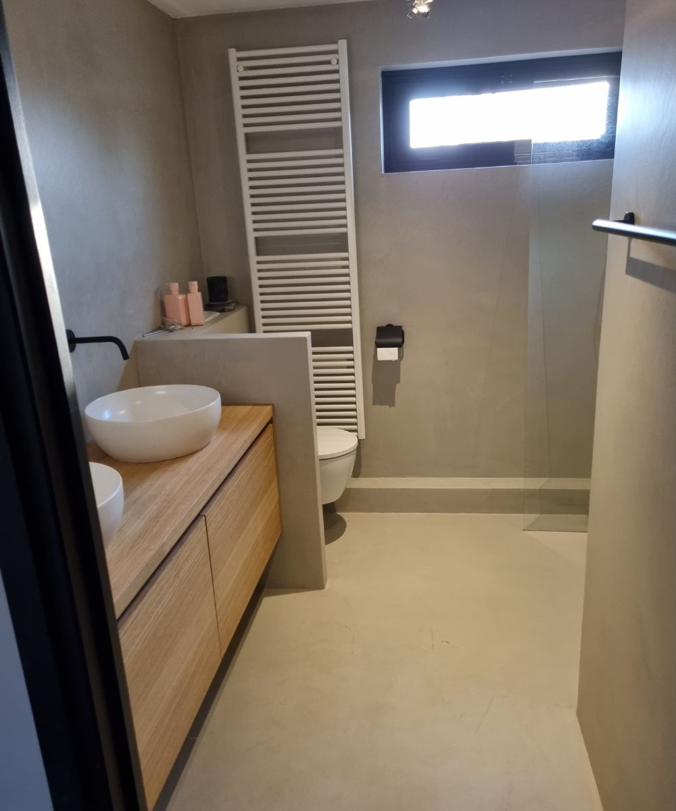
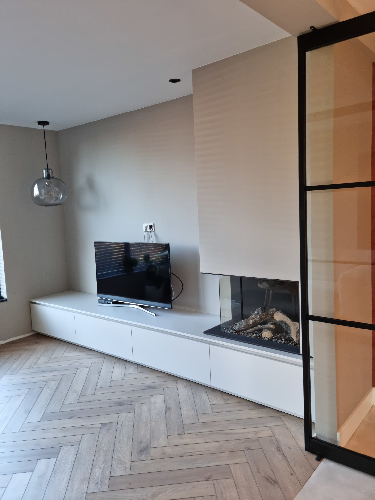

Uitgelicht
Project Uden
Nieuw totaalproject in voorbereiding — binnenkort te bekijken.
Nieuw totaalproject in voorbereiding — binnenkort te bekijken.

Keukeneilanden, kastenwanden en buitenkeukens geheel op maat.

Inloopkasten, schuifdeuren en ergonomische bijkeukens.

Massief eiken wastafelmeubels en opbergoplossingen.

TV-meubels, bureaus, wandmeubels en buitenmeubilair.
Filter op categorie en klik op iedere foto voor een volledige weergave.